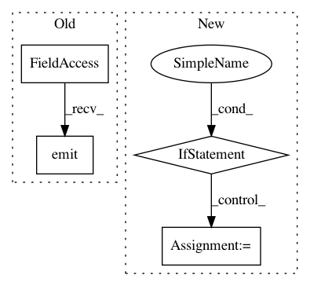

55c0135b05c74a501f2e69705f20ca32544053db,ilastik/applets/tracking/structured/structuredTrackingGui.py,StructuredTrackingGui,_onTrackButtonPressed,#StructuredTrackingGui#,376
Before Change
sys.stderr.write("Exception raised during tracking. See traceback above.\n")
self._drawer.TrackButton.setEnabled(True)
self.applet.progressSignal.emit(0)
self.applet.progressSignal.emit(-1)
req = Request( _track )
req.notify_failed( _handle_failure )
req.notify_finished( _handle_finished )
After Change
// convexify costs
// solver
// compute lineages
if withMergerResolution:
numStages += 1 // merger resolution
if withTracklets:
numStages += 3 // initializing tracklet graph, finding tracklets, contracting edges in tracklet graph
// gui progress visitor
In pattern: SUPERPATTERN
Frequency: 3
Non-data size: 4
Instances
Project Name: ilastik/ilastik
Commit Name: 55c0135b05c74a501f2e69705f20ca32544053db
Time: 2017-03-24
Author: janez.ales@iwr.uni-heidelberg.de
File Name: ilastik/applets/tracking/structured/structuredTrackingGui.py
Class Name: StructuredTrackingGui
Method Name: _onTrackButtonPressed
Project Name: ilastik/ilastik
Commit Name: 253f3d1cb2adfc35c47417971b134d732a04dc36
Time: 2013-01-04
Author: bergs@janelia.hhmi.org
File Name: applets/pixelClassification/autocontextClassificationGui.py
Class Name: AutocontextClassificationGui
Method Name: toggleInteractive
Project Name: biolab/orange3
Commit Name: b3fab1bd1ea5a2cc1195dbe52683573f70245708
Time: 2015-11-06
Author: ales.erjavec@fri.uni-lj.si
File Name: Orange/widgets/data/owpreprocess.py
Class Name: SequenceFlow
Method Name: dropEvent